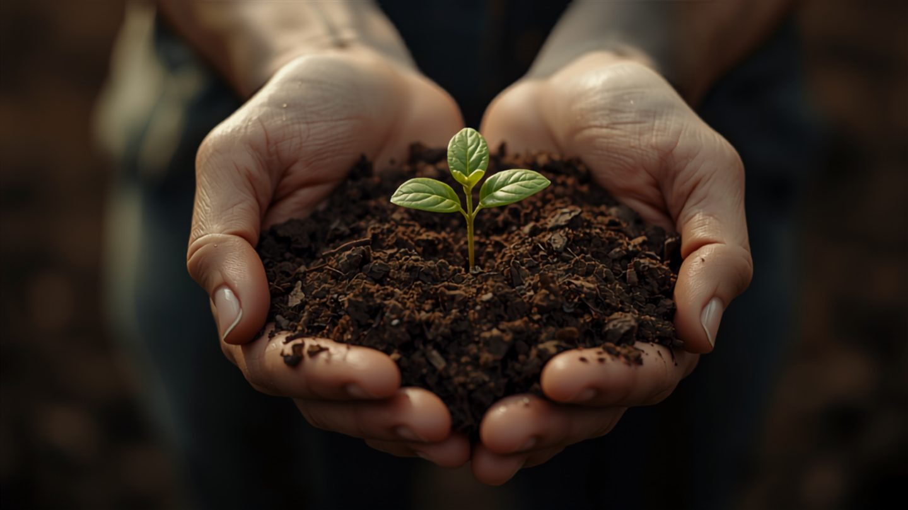

pH-Wert im Gemüsebeet messen und anpassen – die Anleitung
Du düngst, und trotzdem wächst nichts richtig. Oft liegt das nicht am Dünger, sondern am pH-Wert des Bodens.
Denn er entscheidet, ob deine Pflanzen die Nährstoffe überhaupt aufnehmen können, die im Boden liegen. Ist er falsch, ist der Dünger da – aber unerreichbar. Dieser Artikel zeigt, wie du den pH-Wert misst, welcher Wert für welches Gemüse stimmt und wie du ihn korrigierst, ohne es zu übertreiben.
Warum der pH-Wert überhaupt zählt
Der pH-Wert misst, wie sauer oder alkalisch dein Boden ist – auf einer Skala von 0 (sauer) bis 14 (alkalisch), 7 ist neutral. Für den Garten zählt der Bereich zwischen 5 und 8.
Der Punkt ist nicht der Wert an sich, sondern seine Folge: Jeder Nährstoff ist nur in einem bestimmten pH-Fenster für die Pflanze verfügbar. Ist der Boden zu sauer oder zu alkalisch, werden Stickstoff, Phosphor und Kalium chemisch gebunden – sie sind da, aber die Wurzel kommt nicht heran. Das ist der Grund, warum gedüngte Pflanzen trotzdem hungern können.
Der richtige pH-Wert je Gemüse
Die gute Nachricht: Die meisten Gemüse mögen denselben Bereich – leicht sauer bis neutral, also 6,0 bis 7,0. Nur wenige Arten tanzen aus der Reihe.
| Gemüse | Idealer pH-Bereich |
|---|---|
| Kartoffel | 5,5–6,5 (leicht sauer beugt Schorf vor) |
| Tomate | 6,0–6,8 |
| Möhre | 6,0–6,8 |
| Gurke, Salat, Bohne, Erbse | 6,0–7,0 |
| Zwiebel, Knoblauch | 6,0–7,0 |
| Kohl (alle Arten) | 6,5–7,5 (höher beugt Kohlhernie vor) |
| Spinat, Rote Bete, Sellerie | 6,5–7,5 |
| Erdbeere | 5,5–6,5 |
Wer im Bereich 6,0 bis 7,0 landet, macht bei fast allem nichts falsch. Kohl darf etwas höher, Kartoffel etwas niedriger.
Wie du misst
Teststreifen (wenige Euro). Für den Hausgebrauch völlig ausreichend. Bodenprobe mit destilliertem Wasser anrühren, Streifen eintauchen, Farbe mit der Skala vergleichen. Genauigkeit etwa ein halber pH-Punkt – für die Gartenpraxis genug.
Digitales pH-Messgerät (20–50 Euro). Steckt man direkt in die feuchte Erde. Bequem, aber die günstigen Geräte driften und müssen kalibriert werden. Ohne Kalibrierung oft ungenauer als ein Teststreifen für einen Bruchteil des Preises.
Laboranalyse (ca. 20–50 Euro). Der Goldstandard. Institute wie die LUFA liefern nicht nur den pH-Wert, sondern auch die Nährstoffgehalte. Lohnt sich einmal alle drei bis vier Jahre – für den Grundzustand deines Bodens, nicht für die laufende Kontrolle.
Wichtig: Miss je Beet, nicht einmal für den ganzen Garten. Der pH-Wert kann sich von Beet zu Beet unterscheiden, besonders wenn du unterschiedlich gedüngt oder gekalkt hast.
Zu sauer (unter 6,0): kalken
Der häufigere Fall, vor allem bei sandigen Böden und nach vielen Jahren Anbau. Gegenmittel ist Kalk – kohlensaurer Gartenkalk oder Algenkalk.
Die Regel: im Herbst oder Spätwinter ausbringen, nicht mitten in der Saison. Sparsam dosieren und nach einigen Wochen erneut messen, statt gleich die volle Menge zu geben. Kalk wirkt langsam; wer zu viel gibt, kippt den Boden ins Gegenteil, und das ist schwerer zu beheben als zu saurer Boden.
Und: Kalk und Mist oder Kompost nie gleichzeitig ausbringen. Die beiden reagieren miteinander, und wertvoller Stickstoff entweicht als Ammoniak. Zwischen Kalkung und Düngung sollten einige Wochen liegen.
Zu alkalisch (über 7,5): schwieriger
Der seltenere Fall, meist bei kalkhaltigen Böden. Ihn zu senken ist mühsamer als ihn zu heben. Helfen können saurer Kompost, Rindenhumus, Nadelstreu oder elementarer Schwefel – alle wirken langsam und müssen wiederholt werden.
Die ehrliche Empfehlung: Kämpfe nicht gegen einen stark alkalischen Boden an, sondern pflanze, was ihn verträgt – Kohl, Spinat, Rote Bete fühlen sich dort wohler als Kartoffeln oder Erdbeeren.
Wie oft messen
Einmal im Frühjahr je Beet reicht für die laufende Kontrolle – der pH-Wert ändert sich langsam, über Monate, nicht über Wochen. Nach einer Kalkung nach vier bis sechs Wochen nachmessen, um zu sehen, ob sie gewirkt hat. Die gründliche Laboranalyse alle drei bis vier Jahre. Öfter zu messen bringt nichts – der Wert bewegt sich schlicht nicht schnell genug.
Der pH-Wert ist keine Nebensache, sondern die Grundlage, auf der alle Düngung erst wirkt. Ein einziger Teststreifen im Frühjahr sagt dir mehr über die kommende Saison als jeder Sack Dünger. Miss zuerst, dann handle – nicht umgekehrt.
Hortini liest deinen pH-Teststreifen per Foto ab, trägt ihn ins Beet ein und zeigt dir den Verlauf über die Jahre – damit du siehst, ob deine Kalkung wirklich gewirkt hat.
Kostenlos ausprobieren